Jason Eclipse Plugin
Maicon Rafael Zatelli
March 2012
Contents
In order to install the Jason plug-in for Eclipse you should follow the steps below and have
Eclipse version 3.7.0 (Indigo) or greater.
Download the latest version of Jason at the link: http://sourceforge.net/projects/jason/files/
After the download, unpack it in any directory of your machine.
If you had never run Jason on your computer, execute the file "lib/jason.jar" by double clicking over it. You also could execute this file by with the following command:
java -jar lib/jason.jar
The following figure shows the window that you have to see after you run the file jason.jar. Make sure about the directories of the libs. We suggest you only change the "Java Home" directory. The others are automatically filled out, but feel free to change them if you want to.
Finally you could install the Jason plugin for Eclipse opening the Eclipse platform and going to the option "Install New Software..." at the "Help" menu:
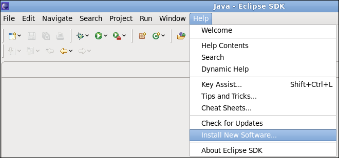
So, the following window will appear.

Click over the "Add" button, and fill out the form as shown in the next figure. The parameters are
Name: jasonide
Location: http://jason.sourceforge.net/eclipseplugin/
To finish, click on the "OK" button.
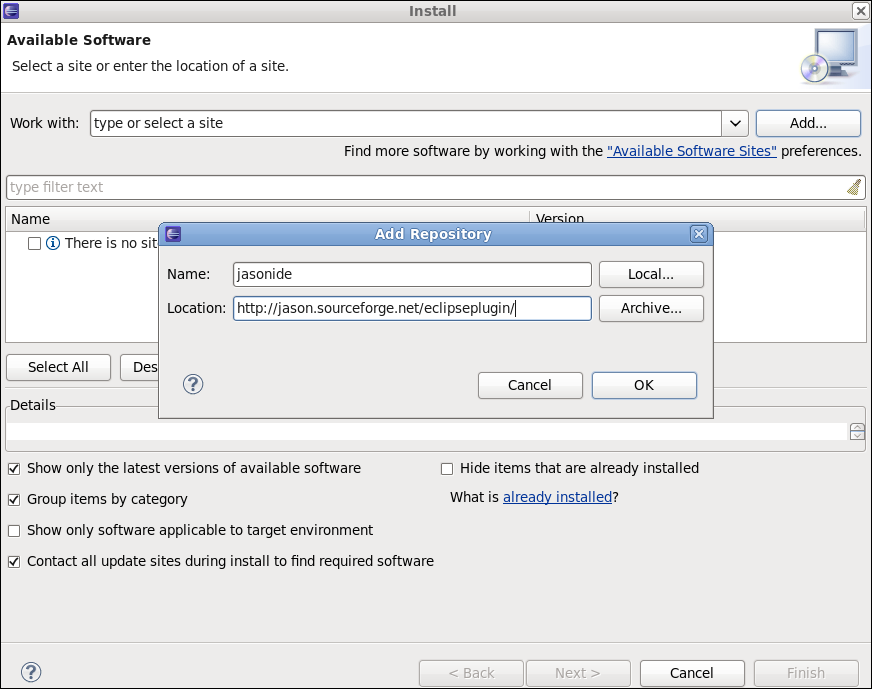
Tick the option "jasonide" and then press the "next" button. So, you have to wait a moment while Eclipse search the dependences.
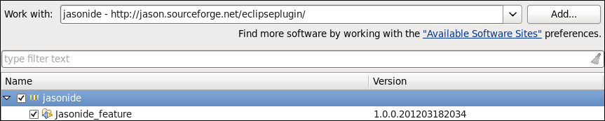
In the next windows just press the "next" button again.
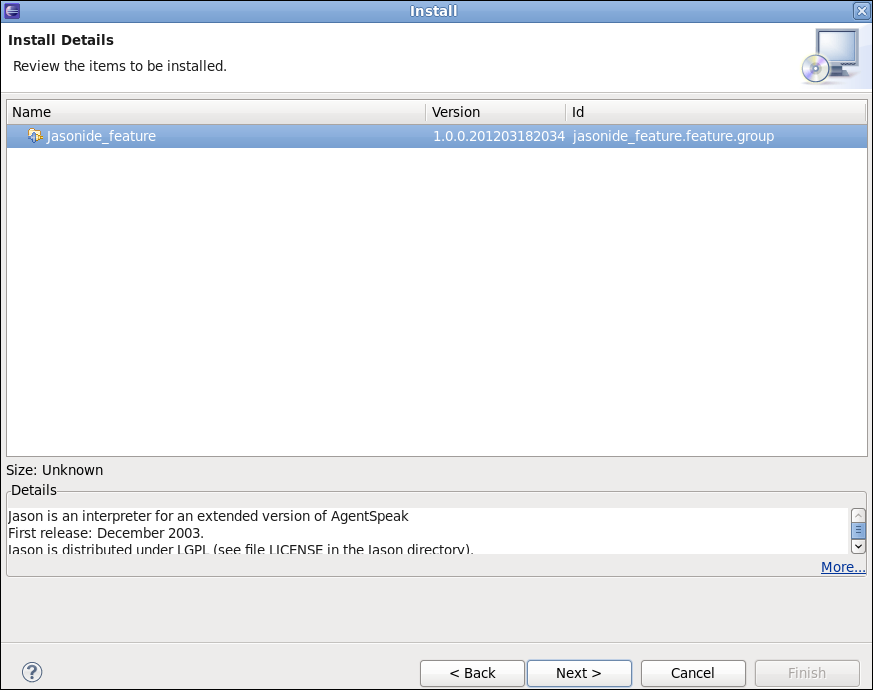
The last window that will be shown for you is about the license. Tick the option "I accept the terms of the license agreements" and then press the "finish" button. Then the installation is proceeded, it could take several minutes, so please wait.
In the end of these process will be shown a window in order to complete the installation. Choose the option "Restart Now".
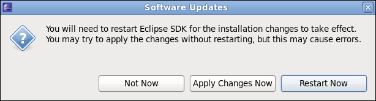
Now you have all set. In order to test the installation of the plug-in, we suggest the creation of a simple hello world project. You could do it in the menu (File > New > Jason Project) or (File > New > Other > Jason > Jason Project).

Fill out the field "Project name" and press the "Finish" button.

If everything is fine, you will have your first project created!

Now you can run the application by pressing the Run button.
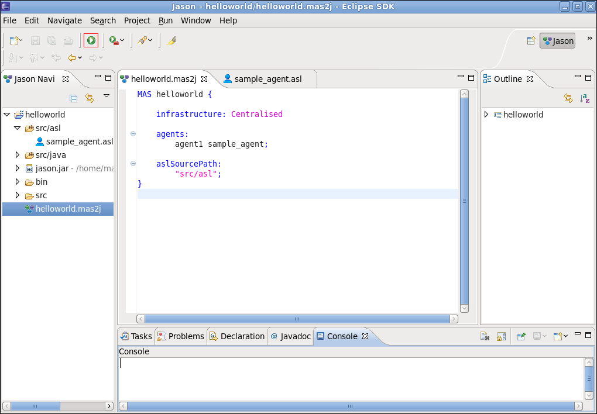
The result will be a "hello world" message in your screen.

Click on the source folder named "src/asl" using the right button and go to the option New > Agent.

Fill out the form. The only required field is the name of the agent.
After it, press the "Finish" button.
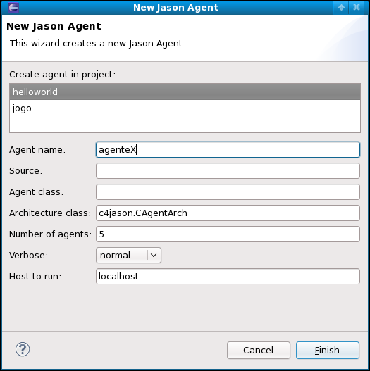
The agent will be created and will be automatically added in the mas2j file.


Click on the source folder named "src/java" using the right button and go to the option New > Internal Action.

Fill out the form. An internal action is a java class, so the only required field is the name of the class.
Note: we suggest you to give a name using the first letter in lower case and also naming the package.
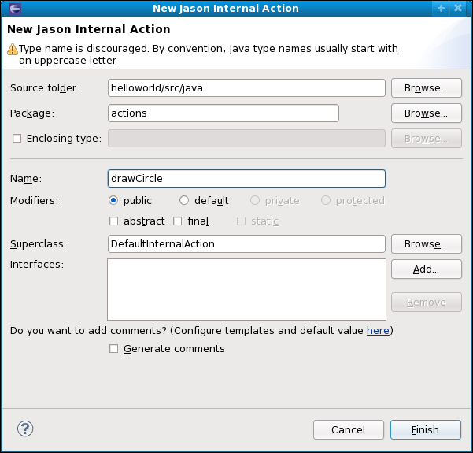
The internal action will be created.
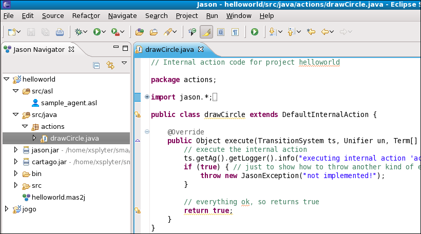
Note: A CArtAgO artifact is only used if you are using the CArtAgO as an environment for your MAS.
Click on the source folder named "src/java" using the right button and go to the option New > CArtAgO Artifact.

Fill out the form. A CArtAgO artifact is a java class, so the only required field is the name of the class.
Note: in contrast to an internal action, in this case you could use a name with a first letter in upper case, and also we suggest you to name the package.
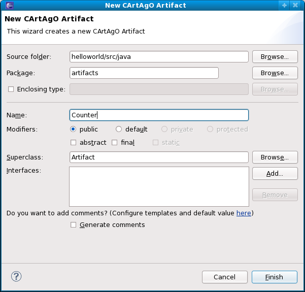
The CArtAgO artifact will be created.

Click on the "File" menu and go to the option "Import...".
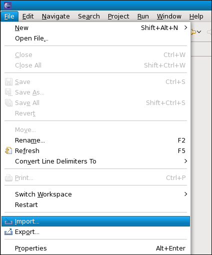
Select the option Jason > Jason Project.
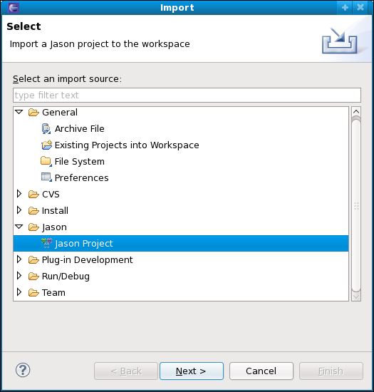
Click on the "Browse" button and choose the directory of the project, tick the project that you wish to import and finally press the "Finish" button.

Click on the project using the right button and go to the option "Export...".

Select the option Jason > Jason Project.

Click on the "Browse" button and select the directory that you wish to export the project and press the "Finish" button.
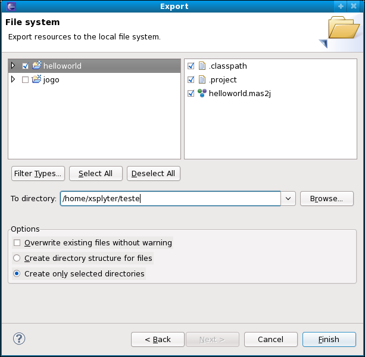
You have two ways to update your Jason eclipse plugin.
Simply click on the "Help" menu and go to the option "Check for Updates".

Click on the "Help" menu and go to the option "About Eclipse SDK".

Press the "Installation Details" button.
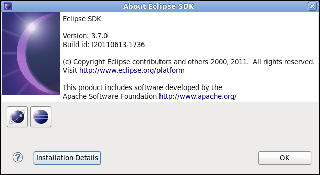
Select the "jasonide_feature" and click on the "Update..." button.
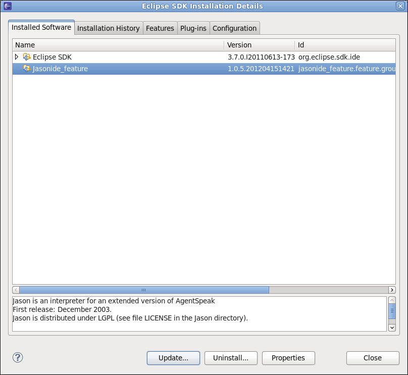
Click on the "Help" menu and go to the option "About Eclipse SDK".
Press the "Installation Details" button.
Select the "jasonide_feature" and click on the "Uninstall..." button.

Confirm the process of uninstallation pressing the "Finish" button.

In order to complete the uninstallation press the "Restart Now" button.

Thanks for you interest on Jason. You will find more information at http://jason.sf.net.